Kappale 10 Paikalliset liikehäiriöt ja dyssynkronia
Kuten aikaisemmassa kappaleessa jo mainittiin, niin LV:n liikehäiriöt ovat yleisiä LV:n toiminnan arviota häiritseviä tekijöitä.
Seinämän liikehäiriöt voidaan jakaa muutamaan ryhmään:
Pari määritelmää ennen syvällisempää keskustelua:
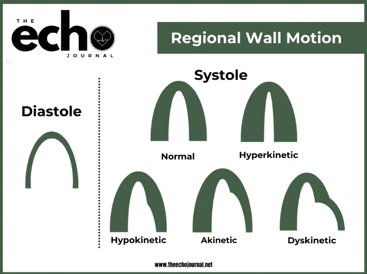
10.1 Paikalliset liikehäiriöt
Paikallisia seinämäliikehäiriöitä (regional wall motion abnormalities, RWMA) on hyvä osata bongata myös ejektiofraktion arvioimisen ulkopuolella, koska ne yleensä viittaavat iskemiaan tai jopa infarktiin (niin akuuttiin kuin aikaisempaankin). UKG voi siis auttaa tunnistamaan sydäniskemiaa, kun EKG on epäselvä. UKG:ssa ilmenee yleensä muutoksia jopa n. 10-20 sekunnissa iskemian alusta eli paikallinen liikehäiriö voidaan nähdä kuvantamalla ennen kuin se näkyy EKG:ssa – muutos on nähtävissä jopa ennen rintakivun syntymistä.
Jos koko sydän supistuu tasaisen huonosti (globaali hypokinesia), kyseessä on usein dilatoiva kardiomyopatia tai myokardiitti. Jos taas vain yksi seinämän kohta on hypo- tai akineettinen ja muut toimivat jopa hyperkineettisesti (kompensointia), kyseessä on lähes varmasti sepelvaltimotauti, varsinkin jos affisioituminen noudattaa tiettyä tunnettua sepelvaltimoaluetta.
Paikallisia liikehäiriöitä voi kuitenkin olla usein hankalaa havaita, varsinkin jos endokardiumin näkyvyys on heikkoa ja liikehäiriö on vain hypokinesiatasoista eikä selkeää akinesiaa ole vielä kehittynyt.
10.1.1 LV:n segmentointi
Vasen kammio jaetaan eri osiin ja osat nimetään hieman eri tavoin riippuen siitä, minkä erikoisalan kirjallisuutta lukee. Akuuttilääketieteen (ED) ja tehohoidon (critical care) jako on yleensä kardiologista 17-segmentin jaottelua yksinkertaisempi.
ASE:n 17-segmentin malli jakaa vasemman kammion standardoituihin alueisiin, joita käytetään mm. ekokardiografiassa sekä CT-, MRI- ja isotooppikuvantamisessa. Standardoitu malli optimoi intra- ja intermodaalista vertailua. Paikalliset liikehäiriöt tulisi kuvailla mallin mukaisesti.
Pitkittäisakselissa LV jaetaan yhtä suuriin kolmanneksiin, joiden nimet ovat basaalinen (basal), keskimmäinen (mid) ja apikaalinen (apical) kolmannes. Aivan apeksin kärki muodostaa yhden erillisen segmentin (apical cap). Kun kolmanneksia katsotaan poikittaisakselissa, niin ne muodostavat renkaita, jotka on jaettu sektoreihin (segmentteihin) ja nämä taas numeroitu vastapäiväisessä järjestyksessä.
Tyvikolmanneksessa eli basaalikolmanneksessa on kuusi 60° sektoria/segmenttiä
Keskikolmanneksessa on myös kuusi 60° sektoria/segmenttiä
Kärkikolmanneksessa on neljä 90° sektoria/segmenttiä
Lopulta aivan apeksin kärki on oma segmenttinsä (segmentti 17).
Akuutti- ja tehohoitokirjallisuus yleensä taas jakaa sydämen vain neljään segmenttiin vähän samalla tavalla kuin EKG:ssakin jaetaan sydän: septaalinen/anteroseptaalinen, inferiorinen, posteriorinen ja lateraalinen.
Kolmen tärkeimmät sepelvaltimon (LAD, RCA, LCx) alueiden ajatellaan menevän seuraavasti:
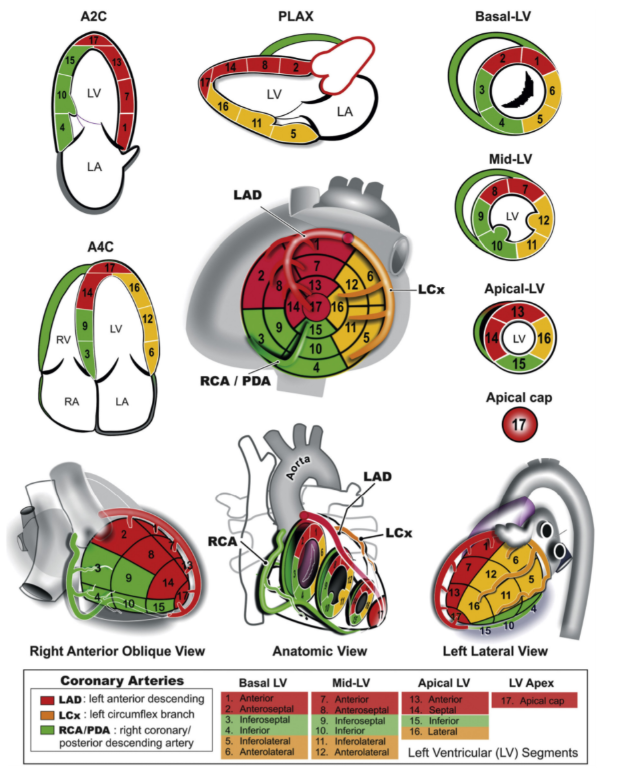
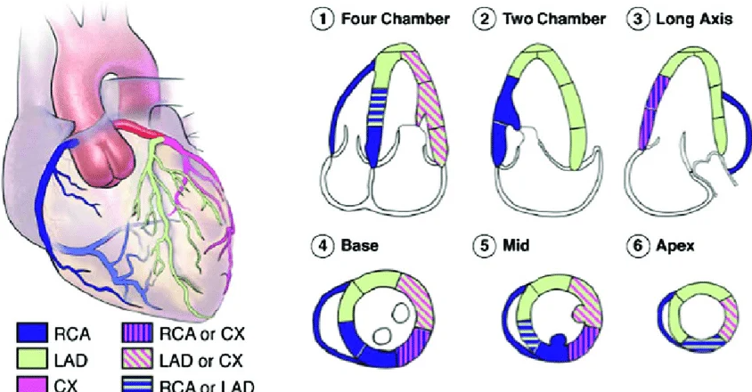
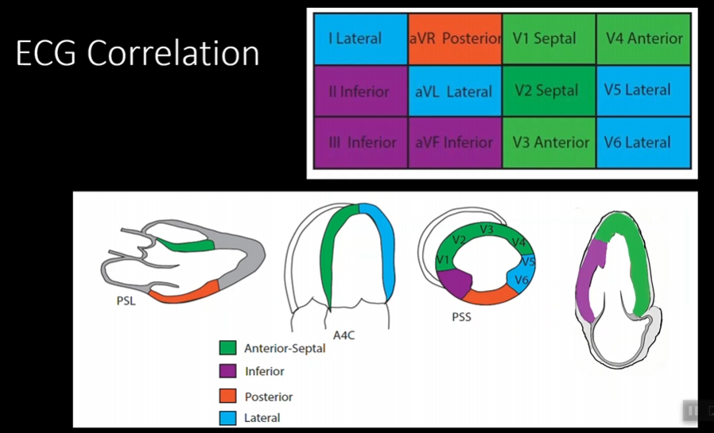
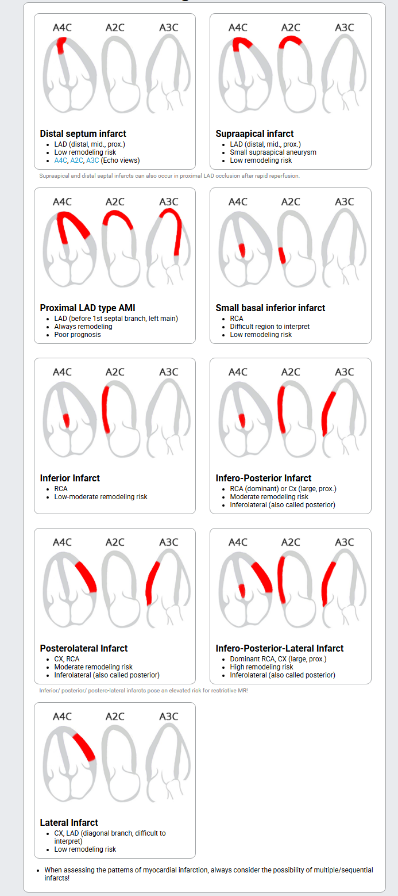
Tässä on todella hyvä video segmenteistä 3D-mallin kautta esiteltynä. Alla on samalta videolta klippejä:
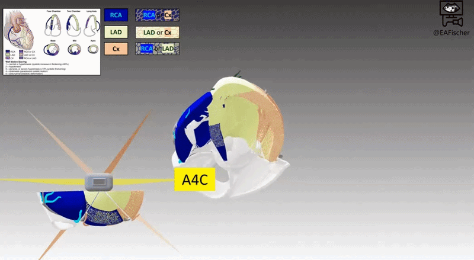
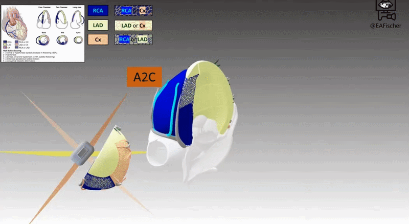
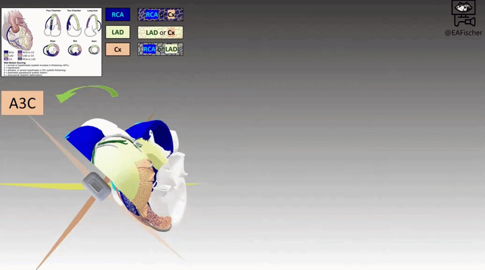

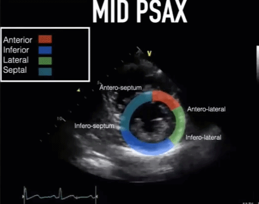
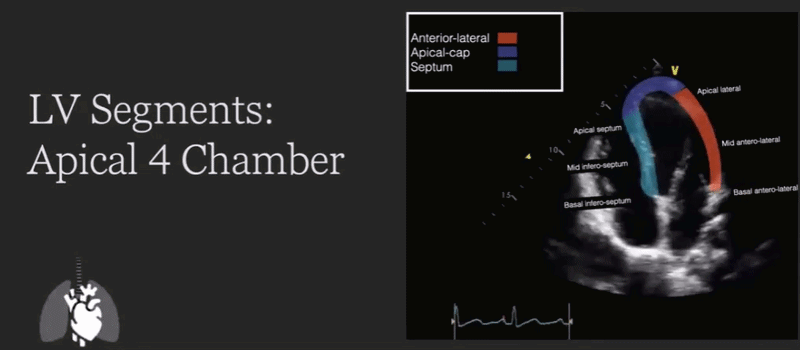
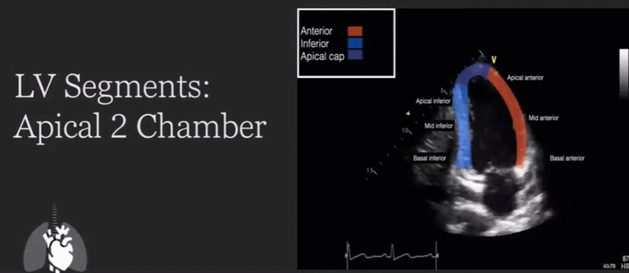
10.1.2 Esimerkkejä


10.1.2.6 6 - Mitkä segmentit ovat liikehäiriöisiä?
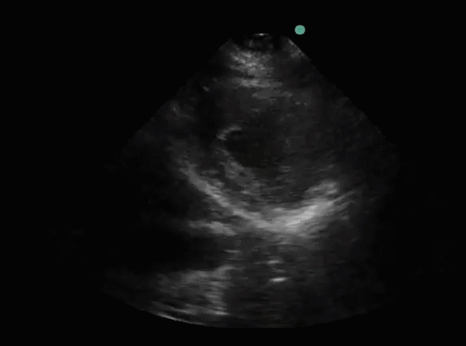
Keskimmäiset septaaliset ja anteroseptaaliset segmentit ovat hypokineettisiäAlla olevassa gifissä nuolten osoittamat segmentit ovat normokineettisiä, mutta septaaliset/anteroseptaaliset segmentit vähän kuin vetäytyvät keskelle päin niiden vetämänä eikä itse supistu. Oikealla segmenttijako ei ole tehty 17-segmentin mallin mukaan.
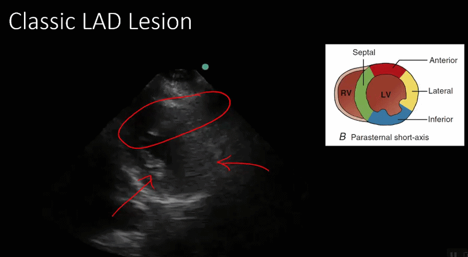
Tässä on selkeämpi esimerkki samanlaisesta liikehäiriöstä. Yleensä tällaiset aiheuttaa LAD:n tukos.
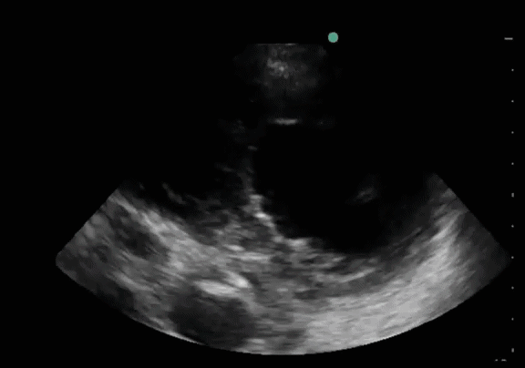
10.1.2.7 7 - Mitkä segmentit ovat liikehäiriöisiä?
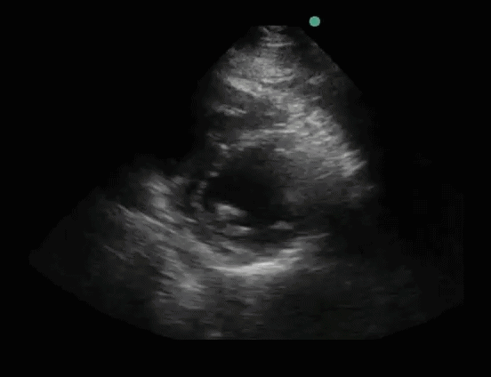
Inferioriset ja inferoseptaaliset segmentitSegmenttijako ei ole tehty gifin kuvassa 17-segmentin mallin mukaan.
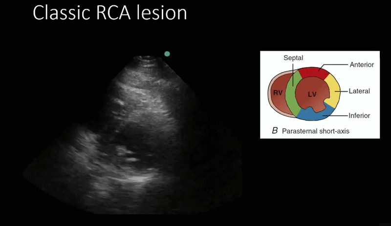
Tässä on selkeämpi esimerkki samanlaisesta liikehäiriöstä. Yleensä tällaiset aiheuttaa RCA:n tukos.
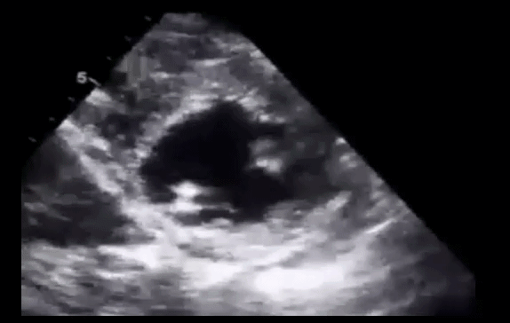
10.1.2.8 8 - Mitkä segmentit ovat liikehäiriöisiä?
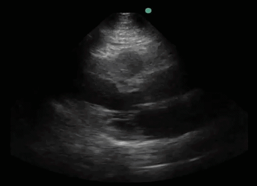
Inferolateraaliset segmentit (niin basaalinen, keskimmäinen ja todnäk myös apikaalinen)Segmenttijako ei ole tehty gifin kuvassa 17-segmentin mallin mukaan.
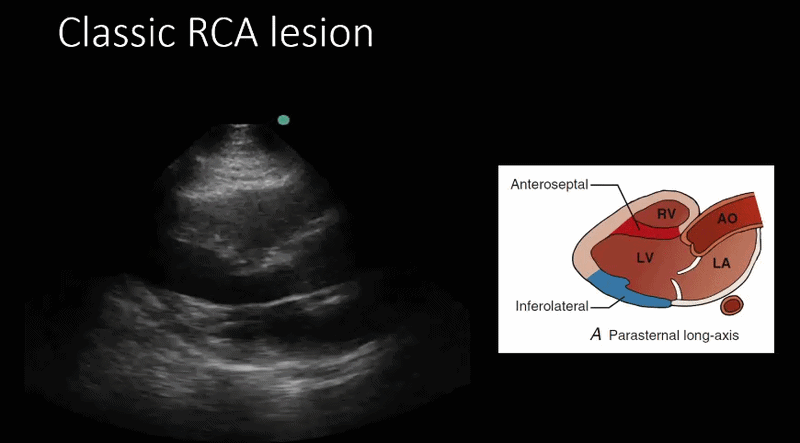
10.1.2.9 9 - Mitkä segmentit ovat liikehäiriöisiä?
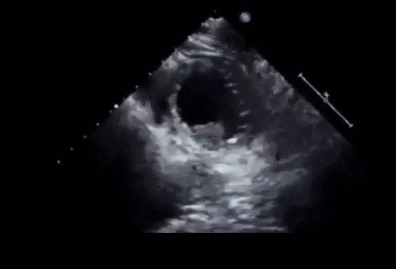
Infero- ja anterolateraaliset segmentit Yleensä tällainen on LCx:n leesio. Segmenttijako ei ole tehty gifin kuvassa 17-segmentin mallin mukaan.
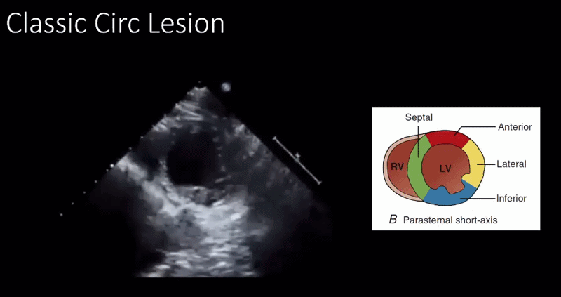
10.1.2.10 10 - Mitkä segmentit ovat liikehäiriöisiä?
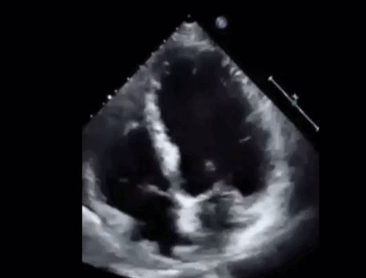
Anterolateraaliset (basaalinen ja keskimmäinen) ja lateraalinen (apikaalinen) segmenttiYleensä tällainen on LCx:n leesio. Segmenttijako ei ole tehty gifin kuvassa 17-segmentin mallin mukaan.
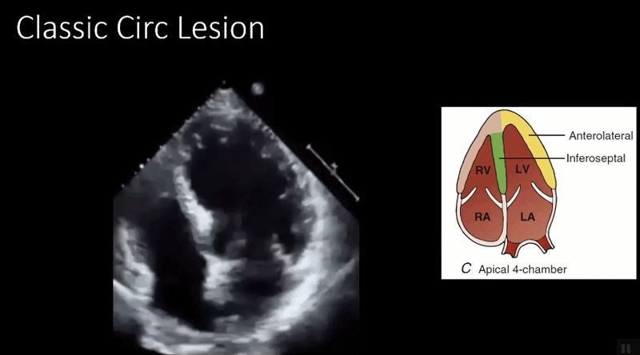
10.1.2.11 11 - Mitkä segmentit ovat liikehäiriöisiä?
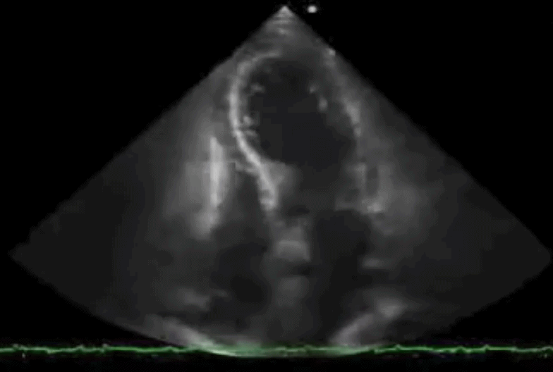
Apikaaliset segmentit (tällä potilaalla oli takotsubo-oireyhtymä)Takotsubo-oireyhtymä (tunnetaan myös nimillä särkynyt sydän -oireyhtymä tai stressikardiomyopatia tai apical ballooning syndrome) on yksi tärkeimmistä akuutin sepelvaltimotautikohtauksen (ACS) erotusdiagnostisista vaihtoehdoista. Sen oireet ja löydökset (EKG-löydökset ja troponiinipäästö) pitkälti muistuttavat sydäninfarktia eikä oireyhtymien erottaminen yleensä ole mahdollista muuten kuin angiografiassa. Sydäninfarktille tyypillisistä oireista, EKG-löydöksistä ja troponiinipäästöstä (troponiini ei tosin yleensä nouse yhtä korkealle kuin sydäninfarktissa) huolimatta sepelvaltimot ovat angiografiassa avoimet (tosin sepelvaltimotaudin toteaminen ei poissulje Takotsuboa – ei vain saa olla kyseiselle tilanteelle sopivaa akuuttia sepelvaltimotukosta).
Takotsubo-oireyhtymä kuvailtiin ensimmäisen kerran Japanissa 1990. Sairaus nimettiin japanilaisen mustekalapyydyksen mukaan (蛸壺 eli tako tsubo; tako = mustekala, tsubo = ruukku; tosin usein kirjoitetaan taudin yhteydessä kanjien sijaan hiraganoilla: たこつぼ心筋症 eli takotsubokardiomyopatia tai nykyään enemmänkin suositaan nimeä たこつぼ症候群 eli takotsubo-oireyhtymä (kyseessä on akuutti sairaus, joten termiä kardiomyopatia ei suosita)). Patofysiologia on vielä hieman hämärä, mutta ajatellaan, että stressireaktiossa vapautuva suuri adrenaliinipitoisuus aiheuttaaa G-proteiinivälitteisesti supistumislamaa sydänlihaksessa. Yleensä lama on merkittävin sydämen kärjessä, koska beeta-adrenergisten reseptorien määrä on jakautunut epätasaisesti kammioon niin, että apikaalisessa osassa on enemmän reseptoreita kuin basaalisessa osassa. Tästä johtuen takotsubo-oireyhtymän tyypillisin muoto on ns. apikaalinen takotsubo eli apeksi heikentyy ja pullistuu ulospäin ja samalla tyvi on hyperaktiivinen. Tästä oireyhtymä saa nimensäkin; sydän on apikaalisessa tyypissä mustekalapyydysruukun muotoinen. Harvinaisempia tyyppejä on mm. midventrikulaarinen tyyppi, basaalinen tyyppi ja vielä fokaalinenkin tyyppi.
Oireisto alkaa tyypillisesti voimakkaan tunnepitoisen tapahtuman, fyysisen ponnistuksen, muun sairauden tai lääketieteellisen toimenpiteen yhteydessä. Noin neljäsosalla ei voida tunnistaa mitään selkeää etiologista tekijää. Suurin osa potilaista on vaihdevuodet ohittaneita naisia (90% potilaista on naisia). Oireet muistuttavat akuuttia sydäninfarktia: ¾:lla oireena on rintakipu ja puolella hengenahdistus. Kliininen kuva voi vaihdella lievästä huonovointisuudesta ja jopa oireettomuudesta vaikeaan sydämen vajaatoimintaan ja kardiogeeniseen sokkiin; pienellä osalla oireena on pyörtyminen.
Takotsubo-potilasta hoidetaan siis yleensä sydäninfarktina, kunnes päästään angiosaliin, jossa ei todeta akuuttia sepelvaltimotukosta. Sen jälkeen yleensä tehdään vielä vasemman kammion varjoainekuvaus, joka osoittaa tyypillisen kammion kärjen akineettisyyden, joka ylittää sepelvaltimosuonen alueen. Joissakin tapauksissa diagnoosi varmistuu vasta sydämen magneettikuvauksen jälkeen. Kaikista sydäninfarktioireisista potilaista n. 2 %:lla on takotsubokardiomyopatia.
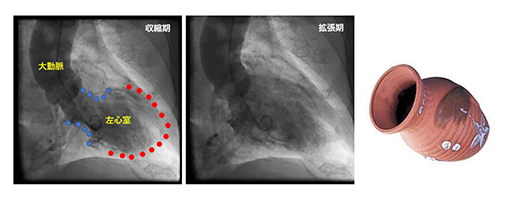

Kun diagnoosi on varmistunut takotsubokardiomyopatiaksi, hoito mukailee sydämen vajaatoiminnan hoitoa: aloitetaan siis ennustelääkkeet (ainakin ACEi ja beetasalpaaja; muiden käyttö on vakiintumatonta) ja niitä jatketaan, kunnes kammion toiminta on normaalistunut (lääkkeiden pitkäaikaiskäytöstä ei ole näyttöä, jollei muuta syytä niiden jatkolle ole). Lääkkeitä tai LMWH kannattaa antaa koko sairaalahoidon ajan. Jos sydämen kärjessä on viitteitä hyytymästä tai kammion kärki on vahvasti akineettinen, tulee aloittaa pidempiaikaisempi antikoagulaatio (varfariini/DOAC); magneettikuvauksesta saattaa olla hyötyä päätöstä tehdessä.
- Tästä puhuttiin jo viime kappaleessa sigmoidin septumin yhteydessä, mutta nyt Takotsubon oireyhtymässä voi samoin sydämen tyven (klassinen apikaalinen takotsubon muoto) supistuessa ahkerasti syntyä dynaamista LVOTO:a (n. 10%:lla potilaista kehittyy LVOTO). LVOTO siis pahenee hyperkontraktiileissa tiloissa, koska se lisää virtausnopeuksia LVOT:ssa (pahentaa mm. Venturi-ilmiötä) ja myös pahentaa työntöefektiä (veri voi myös työntää mitraalipurjeita ulosvirtauskanavaan Venturi-imun lisäksi). Preloadin väheneminen myös pahentaa geometrisesti obstruktiota, kun kammion täyttötilavuus pienenee (kammion ontelo jää pieneksi ja supistuksen alkaessa sen seinämät ja mitraaliläpän purjeet ovat anatomisesti lähempänä toisiaan).
- Beetasalpaajat voivat auttaa LVOTO:n vähentämisessä, koska ne hidastavat sykettä ja parantavat siten diastolista täyttymistä. Myös nestehoito voi vähentää LVOTO:a täyttymisen parantuessa. Puhtaat vasopressorit voivat myös auttaa tarvittaessa, mutta inotrooppeja tulisi välttää.
- Inotrooppeja (ESC:n suosituksena milrinoni) voidaan tarvittaessa käyttää mahdollisimman pienillä annoksilla, jos ei ole LVOTO:a. Niiden käyttö on kuitenkin kaksipiippuinen juttu, koska lisääntynyt inotropia voi potentiaalisesti aiheuttaa LVOTO:n.
Vaikka takotsubo ei olekaan akuutti sepelvaltimo-oireyhtymä, niin kyseessä ei kuitenkaan ole täysin benigni sairaus. Mortaliteetti sairaalassa on n. 2-5% ja kuolleisuus yleensä liittyy komplikaatioihin, kuten rytmihäiriöihin, vajaatoimintaan ja aivohalvaukseen. Takotsubo on kuitenkin määritelmällisesti paraneva sairaus akuutin vaiheen jälkeen ja n. 95%:lla potilaista heikentynyt sydänlihas paranee muutamassa viikossa. Tila uusii n. 5-22%:lla ja uusimisajankohta vaihtelee n. 3kk-10 vuotta ensimmäisestä ilmentymisestä.
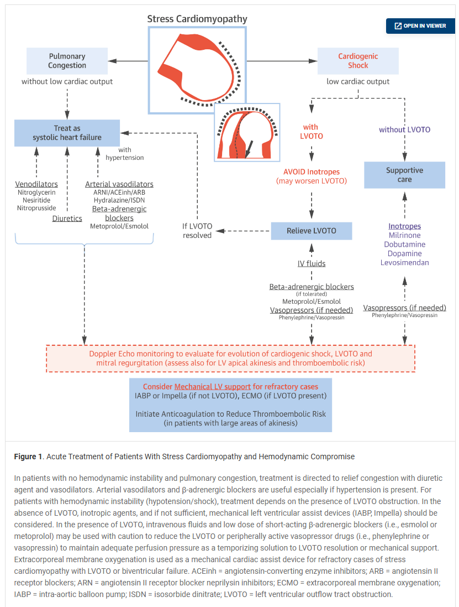
Tässä alla potilaalla on selkeä LVOT:n obstruktio.


10.2 Dyssynkronia
Dyssynkronia tarkoittaa poikkeavuuksia normaalin aktivaation ja kontraktion ajoituksessa; tämä ongelma voi olla eteisten ja kammioden välinen (atrioventricular dyssynchrony), oikean ja vasemman kammion välinen (interventricular dyssynchrony) tai kammion eri seinämien välinen (intraventricular dyssynchrony).
Yleensä kun puhutaan kliinisesti merkityksellisestä dyssynkroniasta, niin viitataan useimmiten vasempaan haarakatkokseen (LBBB). Se käytännössä aiheuttaa kaikkia yllä mainittuja ajoitusongelmia:
Koska LBBB aiheuttaa vasemman kammion myöhästyneen supistumisen, niin tämä on usein helpommin havaittavissa UKG:n 2D-kuvassa kuin RBBB, joka taas hidastaa oikean kammion supistumista. Vasen kammio on korkeamman paineen systeemi ja dominoi normaalistikin ultraikkunoita, joten RBBB on merkittävästi vaikeampaa havaita 2D-kuvasta. RBBB:ssäkin kyllä voidaan havaita dyssynkroniaa visuaalisesti usein, mutta septumin supistuminen on yleensä aika normaali ja tyypillisin poikkeavuus on myöhäinen oikean kammion vapaan seinämän supistuminen.
LBBB:n arvioimiseksi ultraäänellä riittää yleensä ihan visuaalinen maininta dyssynkroniasta, mutta on myös hyvä tiedostaa ne tarkemmat piirteet, joita etsitään LBBB-sydämistä, koska tietoa voidaan hyödyntää sydämen vajaatoiminnan tahdistinhoitoa (CRT) harkitessa. Vaikeassa systolisessa vajaatoiminnassa vasemman kammion seinämien supistuminen on usein eriaikaista, mikä voi edelleen heikentää sydämen pumppaustoimintaa. Vasen haarakatkos (LBBB) todetaan jopa joka kolmannella vajaatoimintapotilaalla. LBBB viivästyttää sydämen taka- ja sivuosien sähköistä aktivoitumista ja supistumista aiheuttaen vasemman kammion seinämien epätahtisen liikkeen. Tämä heikentää vasemman kammion supistumista sekä diastolista täyttymistä ja yleensä myös lisää mitraaliläpän vuodon määrää. Vasen haarakatkos heikentää terveen sydämen iskutilavuutta jopa 40 %:lla. Vajaatoimintaisessa sydämessä dyssynkronian aiheuttama haitta voi olla vieläkin merkittävämpi.
Selvä mekaaninen dyssynkronia on useimmiten todettavissa LBBB:n yhteydessä, kun kammioheilahduksen kesto on EKG:ssä > 150 ms. Tällöin sydämen kaikukuvaustutkimuksessa nähdään viivästynyt vasemman kammion takaseinämän supistuminen väliseinään nähden. Myös lukuisia muita kaikukuvaustutkimuksen mittausarvoja voidaan käyttää dyssynkronian arvioinnissa. Luotettavimmin vajaatoimintatahdistimen hyötyä voidaan kuitenkin ennakoida kahdella visuaalisella löydöksellä. Erityisesti CRT:stä hyötyvät ne potilaat, joilla todetaan kaikukuvaustutkimuksessa vasemman kammion keinuva liike (apical rocking) ja septumin ennenaikainen systolinen liike (septal flash). Lisäksi yksi tyypillinen löydös on septumin oikean kammion suuntainen liike aikaisen systolisen supistumisen jälkeen (septal bounce, paradoxical movement). Huolimatta tästä paradoksisesta liikkeestä, voidaan todeta septumin paksuuntumista, mikä auttaa erottamaan toimivan väliseinämälihaksen paikallisista iskeemisistä liikehäiriöistä. Kannattaa siis myös arvioida paikallisia seinämäliikehäiriöitä, koska laajat infarktiarvet heikentävät vajaatoimintatahdistuksen tehoa. Tarvittaessa arpialueiden laajuutta tulee selvittää EKG:n ja kaikukuvaustutkimuksen lisäksi sepelvaltimoiden varjoainekuvauksen ja magneetti- tai isotooppikuvantamisen avulla ennen päätöstä vajaatoimintatahdistimen asennuksesta.
Virallisesti CRT:n indikaatio on silloin, kun optimaalisesta lääkehoidosta huolimatta sinusrytmissä olevalla potilaalla on oireita (NYHA II-IV), ja EF on ≤ 35 % ja EKG:ssä LBBB-konfiguraatio, jonka QRS-kesto on vähintään 150 ms. CRT-hoito ei hyödytä potilaita, joilla on kapea QRS ≤ 130 ms (ellei ole aihetta kammiotahdistukseen eteis-kammiokatkoksen vuoksi); välillä 130-150ms CRT voi olla hyödyllinen (varsinkin naisilla). Vajaatoimintatahdistuksen ennustetta ja oireita lievittävä teho on osoitettu vain sinusrytmissä olevilla potilailla -> CRT-tahdistusta harkitaan pysyvässä eteisvärinässä vain vaikeaoireisille potilaille.
10.2.1 Septal beak/flash
LBBB:n osoittamiseksi bedside echossa tulisi klassisesti ottaa M-moodi PLAX:ssa septumin ja mitraaliläpän kärkien läpi. Muodostuu käyrä, josta voidaan arvioida erityisesti IVS:n liikettä sydämen syklin läpi:
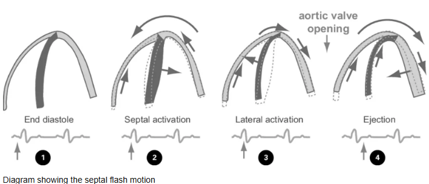
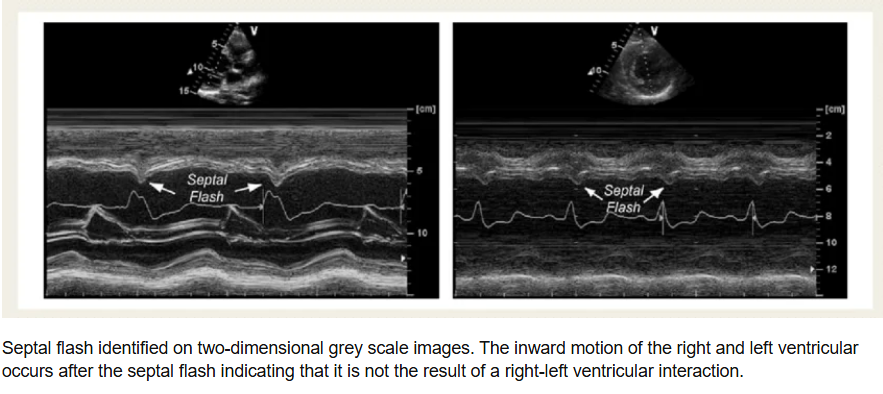
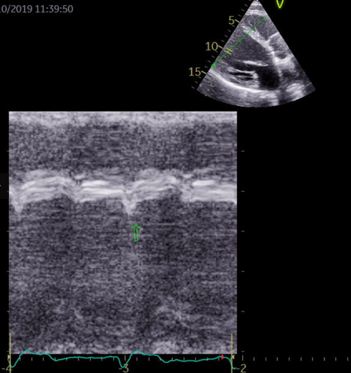
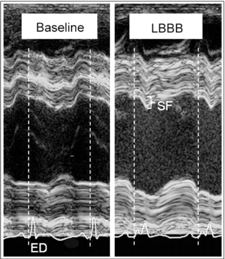
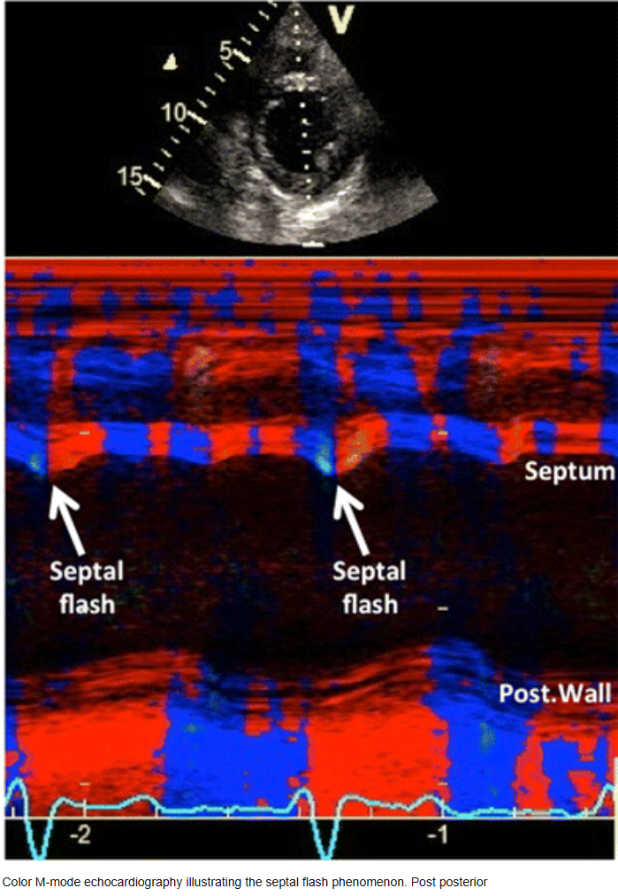
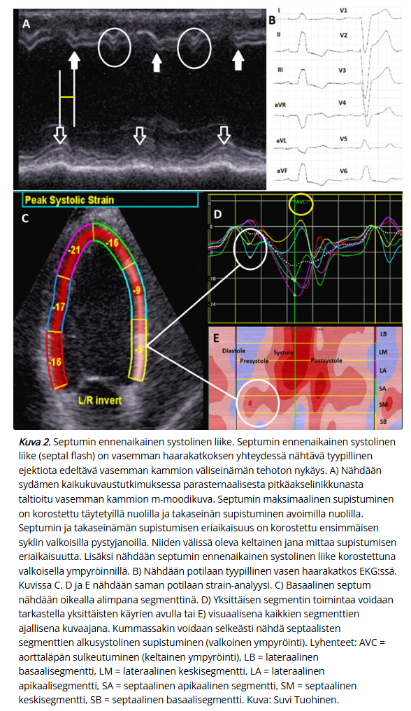
10.2.2 Apical rocking
“Apical rocking”-piirteen arvioiminen yleensä tapahtuu visuaalisesti apikaalisesti. Siinä tyypillisesti lyhyen IVS:n suuntaisen apeksin liikkeen jälkeen tapahtuu pidempikestoinen apeksin liikkuminen vapaata seinää kohti ejektiovaiheessa -> apeksi keinuu sivulta toiselle.


10.2.3 Strain imaging
Kuten jo yhdestä yllä olevasta kuvasta näkyy, niin LBBB:n kanssa voidaan myös tutkia ns. strain imaging -tekniikan eli Speckle Tracking Echocardiography (STE) kautta vasenta kammiota. Strain-kuvantaminen mittaa lihaksen venyttymistä ja puristumista ja kone laskee, kuinka paljon lihassäikeet muuttavat muotoaan ja ilmoittaa tämän prosenttina (esim. jos segmentti on 10cm pitkä ja puristuu 8cm:iin, niin se on lyhentynyt 20% ja Global Longitudinal Strain on n. -20%; negatiivinen vain kuvaa, että lihas lyhenee).
Strain-kuvantaminen auttaa erottamaan kuollutta kudosta (strain lähes 0%) vain dyssynkroniasta. Strain-curve myös auttaa kvantifoimaan septal flashia ja auttaa CRT:n toimimisen todennäköisyyden ennustamisessa.
Strain-kuvantamista ei ole tarjolla suuressa osassa bedside-ultria, joten ei puhuta siitä enempää. Mm. tältä videolta näkee lisää aiheesta LBBB:hen liittyen.

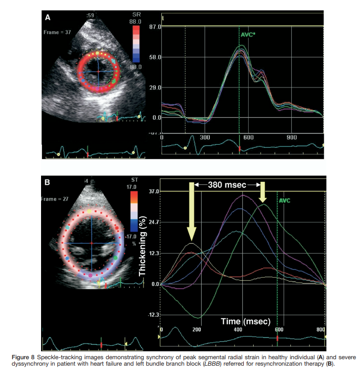